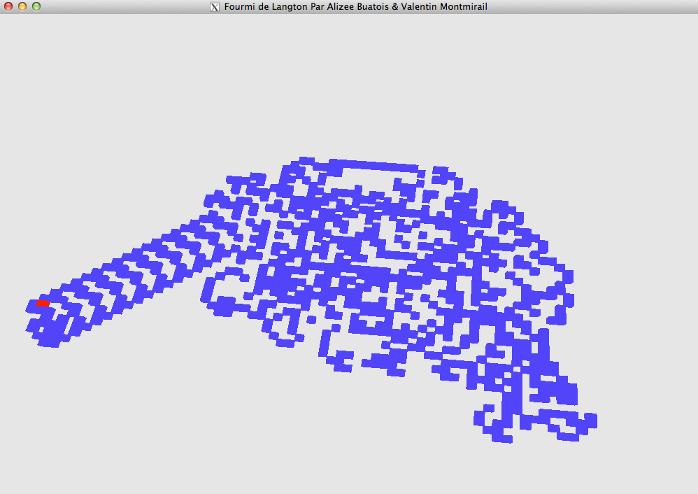

Projet Algorithmique et Langage C
Alizée Buatois alizee.buatois@etu.univ-tours.fr
Valentin Montmirail valentin.montmirail@etu.univ-tours.fr
Le but de ce projet était de généraliser l'automate cellulaire intitulé : La Fourmi de Langton.
Fonctionnement de la Fourmi de Langton initiale
Les cases d'une grille peuvent être blanches ou noires.
On considère arbitrairement l'une de ces cases comme étant l'emplacement initial de la fourmi.
Dans l'état initial, toutes les cases sont de la même couleur.
La fourmi peut se déplacer à gauche ou à droite d'une case à chaque fois selon les règles suivantes :
- Si la fourmi est sur une case noire, elle tourne de 90° vers la droite, change la couleur de la case en blanc et avance d'une case.
- Si la fourmi est sur une case blanche, elle tourne de 90° vers la gauche, change la couleur de la case en noir et avance d'une case.
Le principe de cet automate est qu'après un certain temps (de durée variable) un phénomène singulier se met en place, la Fourmi se met en phase d'autoroute.
Le but un peu "théorique" de notre projet était donc de voir si ce phénomène d'autoroute se produit aussi en 3 dimensions. Fonctionnement de notre Fourmi de Langton généralisée
Dans un premier temps, il a fallu généraliser pour que la Fourmi qui réalise les règles RL (Right et Left) devait pouvoir réaliser le même design avec les règles UD (Up et Down). En effet, la seule différence entre les règles RL et UD était que le design a pivoté de 90°
Toujours la ligne rouge de notre projet : ce phénomène d'autoroute se produit aussi avec les règles UD.
Il a aussi fallu pouvoir réaliser autant de règles R et L que l'on veut et pas simplement une règle de taille 2.
Nous sommes donc arrivés à la conjecture que quand les règles sont "symétriques" [ RRRRLLLL , RRLL , ... ] le phénomène met bien plus longtemps pour se produire, mais il se produit quand même.
Puis il a bien sûr fallu que l'automate celllulaire fonctionne aussi avec l'ensemble des règles R,L,U,D.
La conclusion est donc que même en 3 dimensions, le phénomène d'autoroute se produit quand même.
Pour en savoir plus : C'est ici
A bientôt dans un prochain billet …

{kind=link}
{kind=link}
{kind=link}
{kind=link}
{kind=link}
{kind=link}
{kind=link}